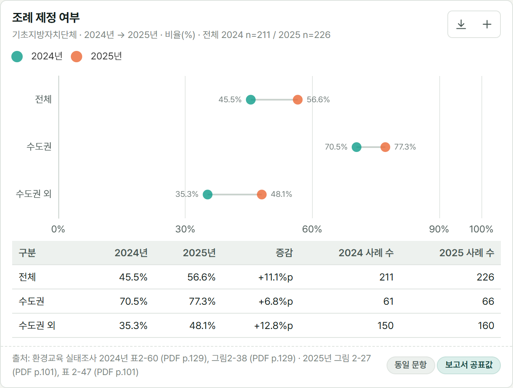
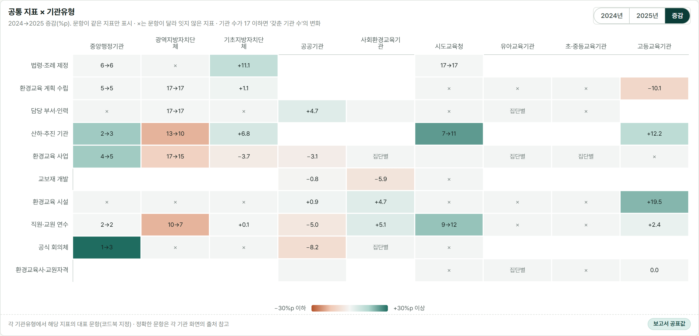
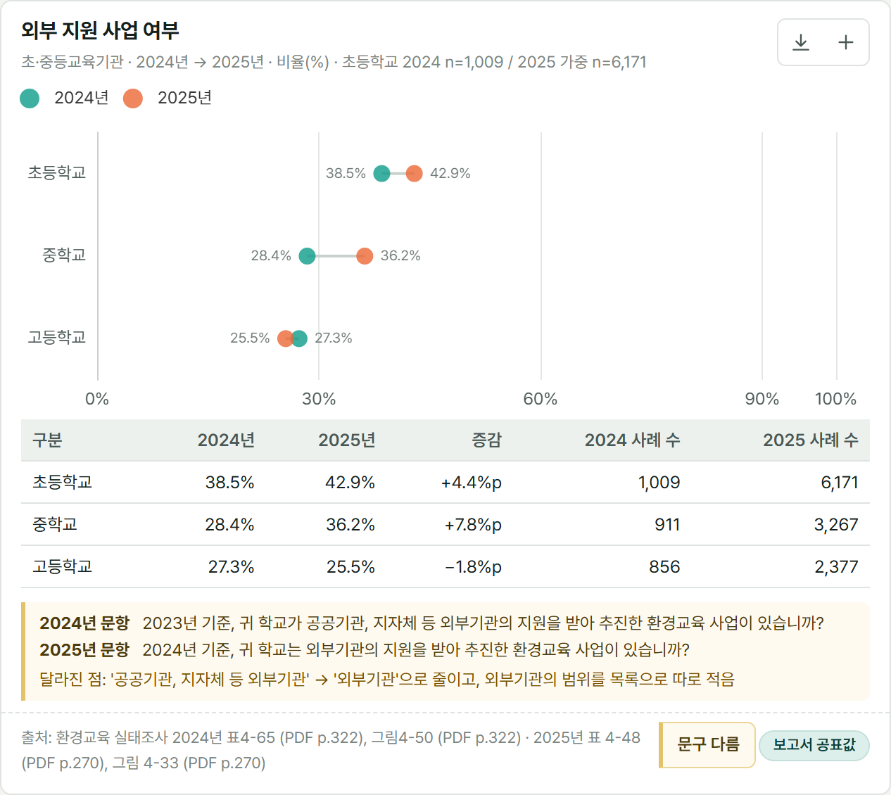

2024년 환경교육 실태조사 자료를 더해 두 해의 흐름을 볼 수 있게 했고, 보고서(PDF) 기능을 고쳤으며, 화면의 값이 보고서 인쇄값과 같도록 맞췄습니다.
| 항목 | 이전 판 (2025 단년도) | 개선판 (2024 반영) |
|---|---|---|
| 실태조사 연도 | 2025년 한 해 | 추가2024·2025 두 해. 기관마다 추이 / 2025년 / 2024년 세 가지 보기 |
| 두 해 비교 | 없음 | 추가문항이 같은 것만 이어 두 해 값·증감·응답 기관 수를 함께 표시. 전체 개요의 공통 지표 표에서도 증감 보기 |
| 값의 근거 | 모든 값이 공표값에 맞춘 합성 데이터의 재집계값 → 일부 집단·평균은 보고서와 조금씩 달랐음 | 개선보고서에 인쇄된 집단은 인쇄값 그대로(「보고서 공표값」 표시). 보고서에 없는 조합만 「합성 데이터」로 표시 |
| 보고서(PDF) | 'PDF로 저장' 버튼을 누르면 빈 PDF가 나옴 | 수리정상 저장. 필터를 건 상태 그대로 담기고, 추이 카드도 담김. 메모 입력 안정화 |
| 문항 대응표 | 없음 | 추가'데이터 안내' 탭에서 문항별로 이었는지, 잇지 않았다면 왜인지 확인·내려받기 |
| 현황조사 | 2025년 단년도 | 단년도 유지(요청대로). 값만 보고서 인쇄값으로 맞춤 |



| 잇지 않은 예 | 이유 |
|---|---|
| 시설 보유 | 2025년부터 '직영 또는 운영비를 지원하는 시설'로 범위를 좁혀 물음 |
| 공식 회의체 (광역·기초·교육청) | 2025년부터 '환경교육법 또는 조례에 근거한' 회의체로 한정 |
| 기초 법 조항 7개 | 2024년은 자체 사업이 있는 101곳만, 2025년은 226곳 전체가 응답 |
| 평균 예산 | 두 해의 단위·산출 기준(기관당 / 사업당)이 다름 |
| 초·중등 계획 수립 | 문항이 '학교교육계획에 환경교육 계획 포함 여부'로 바뀜 |